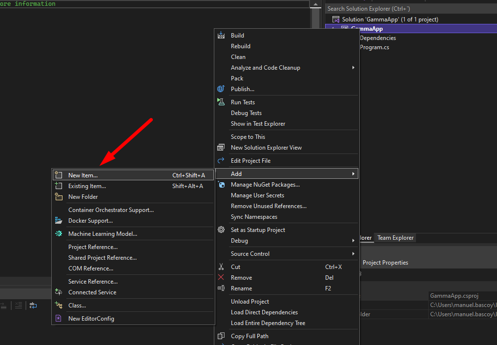
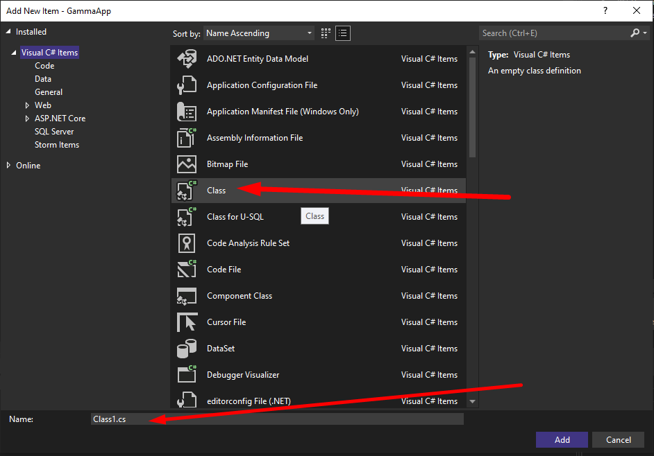
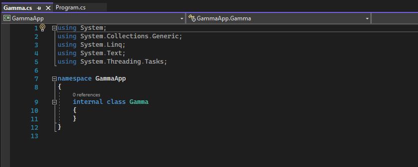

Conceptos generales sobre clases en .Net.
Para crear una nueva clase hacemos click derecho en el proyecto y vamos a Add > New Item
Y seleccionamos Class (Podemos darle un nombre en la caja de texto inferior):
Por defecto la clase se genera así:
Podemos crear propiedades directamente con su getter y setter de la siguiente manera:
public string Titulo { get; set; }Si queremos definir el getter y setter para realizar una encapsulación mas compleja podemos hacerlo asi:
namespace GammaApp
{
internal class Gamma
{
string titulo;
public string Titulo
{
get
{
return titulo;
}
set
{
titulo = "El titulo es: " + value;
}
}
}
}En el momento en el que declaramos un objeto tambien podemos hacer una definición de sus propiedades de la siguiente manera:
Persona persona = new Persona()
{
Nombre = "Mario",
Edad = 18
};La sintaxis es la misma que en JavaScript para los arrays asociativos, pero en vez de usar (:) usamos (=).
Podemos usar el operador ref para pasar parametros una función por referencia en vez de pasar por valor.
En el siguiente ejemplo pasamos un parametro por referencia a la función ModificarTexto.
public void ModificarTexto( ref string texto)
{
texto = texto + " ha pasado por ModificarTexto";
}Al llamar a la función tenemos que usar tambien el operador ref:
string texto = "hola";
objeto.ModificarTexto(ref texto);
Console.WriteLine(texto);En el ejemplo anterior la variable texto se modifica al pasar por la función ModificarTexto, ya que se pasa por referencia.
C# | clases